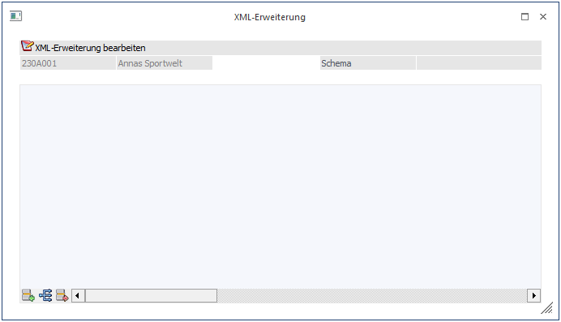
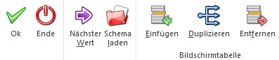
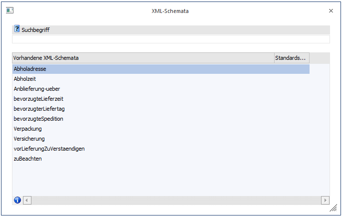
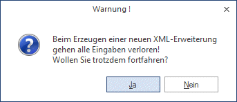
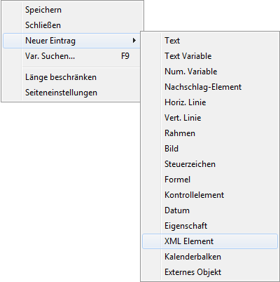
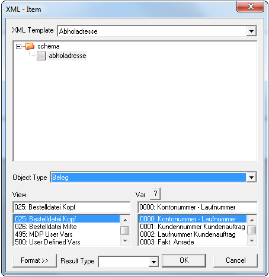
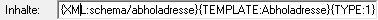
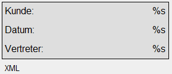
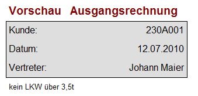

In diesem Fenster, das entweder über den Personenkontenstamm oder über die Belegbearbeitung über den Button aufgerufen werden kann, können beliebige Erweiterungsdateien hinzugefügt werden. Damit können zusätzliche Informationen zum Personenkonto bzw. zum Beleg erfasst werden.
Beim Aufruf des Fensters kann es 3 Möglichkeiten geben:
ü Dem Datensatz wurde bereits eine
XML-Erweiterung zugeordnet
Wenn bei einem Datensatz bereits eine
XML-Erweiterung hinterlegt wurde und dort bereits Daten erfasst wurden, dann
wechselt das Programm beim Aufruf des Fensters sofort in die Tabellenansicht der
XML-Erweiterung.
ü Ein XML-Schemata wurde als "Standard-Schema für Konten" definiert: es wird automatisch in die Tabellenansicht der XML-Erweiterung gewechselt.
ü Dem Datensatz wurde noch keine
XML-Erweiterung zugeordnet
In diesem Fall bleibt das Fenster leer und es kann
ein XML-Schemata, das als Basis für die XML-Erweiterung dient, ausgewählt
werden.

Buttons

Ø Schema laden
Durch Anwählen des Buttons "Schema laden" kann ein XML-Schemata gewählt werden das als Basis (Grundgerüst - Struktur) für die XML-Erweiterung dient.
Wurde ein XML-Schemata gewählt so stehen die entsprechenden Felder zur Eingabe in einer Tabellenstruktur zur Verfügung:

Dabei ist folgender Aufbau vorhanden:
Elemente, die mit dem Symbol versehen sind, stellen eine Gliederungsebene dar. Diese Gliederungsebenen können entweder geöffnet oder geschlossen werden.
Elemente, die mit dem Symbol versehen sind, sind Tags (Elemente), die auch bearbeitet werden können.
Ø Nächster Wert
Durch Drücken der F6-Taste kann zwischen den einzelnen Elementen (Eingabefeldern) gewechselt werden. Ebenfalls kann dies durch Drücken dieses Buttons erreicht werden.
Ø Einfügen
Durch Anwählen des Einfügen-Buttons wird ein neues Fenster geöffnet indem das zugehörige XML-Schemata angezeigt wird. Aus diesem Fenster können neu zum XML-Schemata hinzugefügte Tags übernommen werden.
Ø Duplizieren
Mit dieser Funktion können Tags innerhalb der XML-Erweiterung dupliziert werden. Dazu ist es jedoch erforderlich dass ein "Mehrfachvorkommen" erlaubt ist (Einstellung im XML-Schemata).
Ø Entfernen
Mit dem Entfernen-Button können Tags aus der XML-Erweiterung entfernt werden. Ist ein Tag als Mussfeld definiert, so kann dies nicht entfernt werden.
Hinweis 1
Die XML-Datei muss in einem Text-Editor oder eigenen XML-Editoren selbst erstellt werden. Beispiele für XML-Dateien finden Sie auf der WinLine CD im Verzeichnis \Vorlagen.
Pro Datensatz kann dann immer eine XML-Erweiterung ausgewählt werden, wo dann die relevanten Daten hinterlegt werden können.
Hinweis 2
Wenn bei einem Datensatz bereits Daten für eine XML-Erweiterung erfasst wurden und es wird für den gleichen Datensatz eine andere XML-Erweiterung (XML-Schemata) verwendet, dann wird folgende Meldung ausgegeben:

Wird diese Meldung mit JA beantwortet, dann werden die bereits erfassten Daten der XML-Erweiterung gelöscht und es wird die neue, leere XML-Erweiterung angezeigt. Wenn die Meldung mit NEIN bestätigt wird, bleiben die Daten erhalten und können editiert bzw. ergänzt werden.
Ø OK
Durch Drücken der F5-Taste werden alle vorgenommen Änderungen - was das Editieren von Daten für die XML-Erweiterung angeht - gespeichert.
Ø Ende
Durch Drücken der ESC-Taste werden alle Änderungen verworfen.
Die eingegebenen Werte können mit Hilfe des WinLine Formular Editors auch in den Belegformularen angedruckt werden:

Nach Öffnen des Formulars im Formular-Editor kann über das Kontextmenü (rechte Maustaste) "Neuer Eintrag/XML Element" die XML Vorlage gewählt werden, die die Elemente enthält, die gedruckt werden sollen. Die Auswahl eines XML Element wird natürlich auch in der NEUE ELEMENTE - Bar angeboten.

Die Anweisung sieht wie folgt aus:

Die Variable wird in der Voransicht als XML- Element dargestellt.

